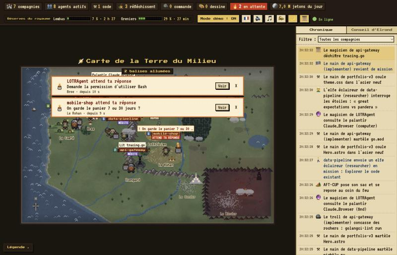

La pierre qui montre, en direct, ce que font tes agents Claude Code — quelque part en Terre du Milieu.
Carte pixel-art · temps réel · zéro dépendance
s'ouvre sur http://127.0.0.1:4777

Le principe
Palantír branche ses hooks sur Claude Code et transforme ce qui tourne vraiment dans ton terminal en une carte vivante. Une session Claude Code s'installe sur un territoire et prend l'apparence d'un hobbit ; chacun de ses sous-agents devient un nain, un magicien, un elfe ou un troll selon ce qu'il fait. Quand un agent attend ta réponse, une balise s'allume sur la carte — exactement comme à Gondor.
| 🧑🌾 | Hobbit | une session Claude Code |
| ⛏️ | Nain à l'enclume | écrit du code (Edit, Write…) |
| 🧙 | Magicien | réfléchit, lit (Read, TodoWrite, MCP…) |
| 🏹 | Elfe éclaireur | cherche (Grep, Glob, WebSearch, WebFetch) |
| 🎨 | Elfe artiste | design, frontend, artifacts |
| 🗿 | Troll | commandes et tests (Bash) |
| 🔥 | Balise + « ! » | attend ta réponse |
| 🏕️ | Feu de camp + « zzz » | au repos (Stop) |
| 🦅 | Aigle | message entre agents (SendMessage) |
Ce que tu vois
SSE en temps réel : chaque hook Claude Code (session, outil, permission, fin) déplace un personnage sur la carte, sans rafraîchir la page.
Un clic sur un personnage qui attend met au premier plan la vraie session : Terminal, iTerm2, VS Code ou l'app Claude.
Une chronique qui annonce les événements qui comptent : nouvelle session, sous-agent en mission, seuils d'usage franchis.
Les limites 5 h et 7 j de Claude lues depuis la status line ou l'app macOS, avec compte à rebours et ombre du Mordor à 80 %.
Gigue celtique 8-bit générée en WebAudio, effets sonores (enclume, cor, aigle) et musique qui s'assombrit quand un agent attend.
Le cycle jour/nuit de la carte suit l'heure locale — la Comté s'endort quand toi aussi tu devrais.
Barre de menus, badge « 🔥N », notifications et musique perso, sans Xcode ni dépendance — AppKit + WebKit purs.
Français, English, italiano, español, 日本語 — et l'elfique, le nain et l'entique, trois vraies conlangs avec glose.
Les territoires
Chaque projet trouve sa place sur la carte, du plus paisible au plus périlleux.
Veille sur tes limites
Deux jauges empruntées aux provisions du Hobbit, remplies par ta vraie consommation Claude.
Langues inventées
Trois conlangs écrites à la main, sans aucun emprunt à Tolkien, avec le français en glose.
Installer
npm start
Node ≥ 18, aucune autre dépendance. S'ouvre sur 127.0.0.1:4777.
npm run install-hooks
Idempotent, garde tes hooks existants, sauvegarde ton settings.json.
npm run build:mac
Glisse Terre du Milieu.app dans Applications. Prêt d'un double-clic.